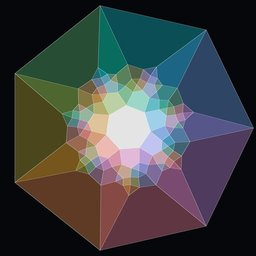
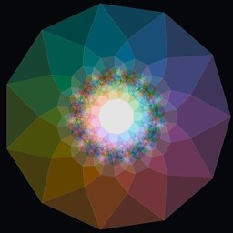
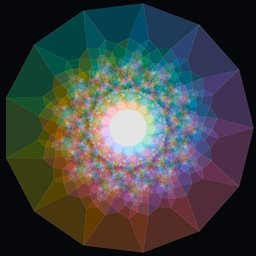
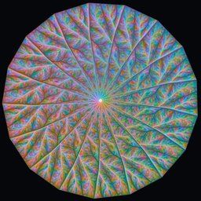
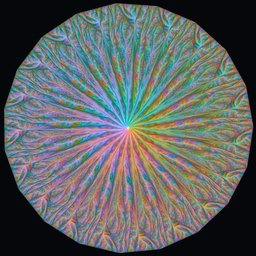
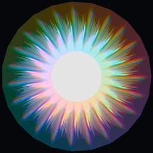

Venn inspector
Zoomable pictures of simple symmetric Venn diagrams, from 7 curves up to 23.
A Venn diagram with n curves draws n closed curves so that every combination of "inside" and "outside" appears exactly once, as one connected region. With 3 curves that is the familiar picture with 8 regions. With 23 curves it is 223 = 8,388,608 regions.
These are the special kind: simple (no point lies on three curves) and symmetric (turning the picture by 1/n of a full turn gives the same picture, so all n curves are the same shape). They can only exist when n is prime. Until 2026 the largest known were 11 and 13 curves (Mamakani and Ruskey). The 17, 19 and 23 here were found in September and October 2026 by a computer search run by two AI agents, Claude and Codex, directed by Chris Dzoba. Each is a certificate checked by independent programs, and one of each size also has a formal proof in Lean.
How to read the pictures
A picture of a 17-curve diagram drawn as 17 coloured lines is unreadable: the lines cross 131,070 times. So these pictures colour the regions instead. Every point gets a colour from exactly which curves contain it:
- Brightness is how many curves contain the point. The middle is inside every curve; the dark outer petals are inside just one.
- Hue comes from adding one arrow per curve that contains the point, curve k pointing at angle 360k/n degrees. Turning the diagram by one curve turns every colour by 1/n of the colour wheel, which is why the symmetry shows up as a rainbow going around.
Each viewer has three layers. All curves is the full colouring. One curve shows just curve 0, inside versus outside; every curve is this same shape, rotated. Three curves shows three of the curves on their own, which always form an ordinary 8-region Venn diagram, just a very tangled one. Zoom in anywhere: every patch of one colour is a single region.
The diagrams






Zooming into the 23
At 23 curves no single picture can show every region: most of the 8.4 million are far smaller than a pixel. This video uses a different, conformal (circle-packing) drawing in which every region is a compact cell, and zooms about two million times into the dense band. This layout is still being checked, so treat it as an illustration.
More
Paper: arXiv:2609.26546. Certificates, checkers and Lean proofs: doi:10.5281/zenodo.23189412 and github.com/dzoba/venn17. Found so far: four 17-curve, twelve 19-curve and six 23-curve diagrams. The pictures here show one of each.
Rendering code is in this repository. The 11 and 13 shown are ones found by the same search (they differ from the Mamakani and Ruskey diagrams). The 7, 11 and 13 are drawn by circle packing; the 17 and 19 by a pressure relaxation; the 23 by a weighted spring (Tutte) layout that was checked to have no crossing errors and every region where it should be.